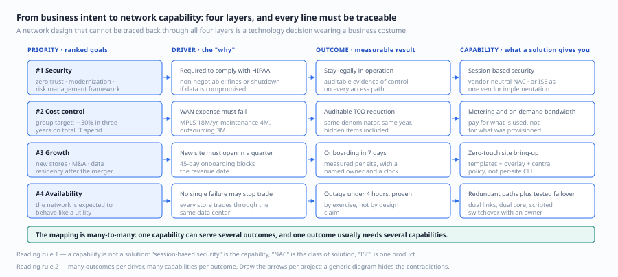
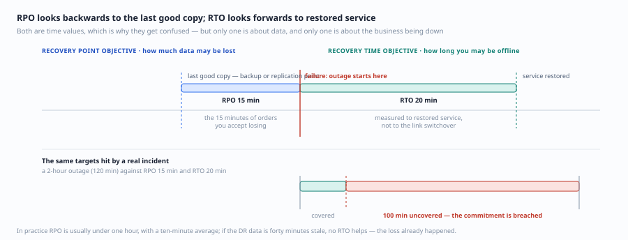
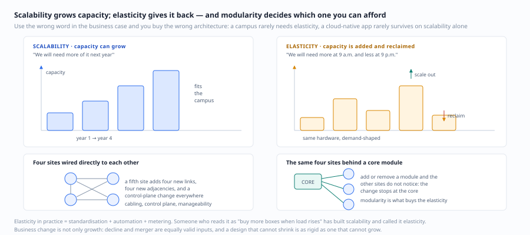
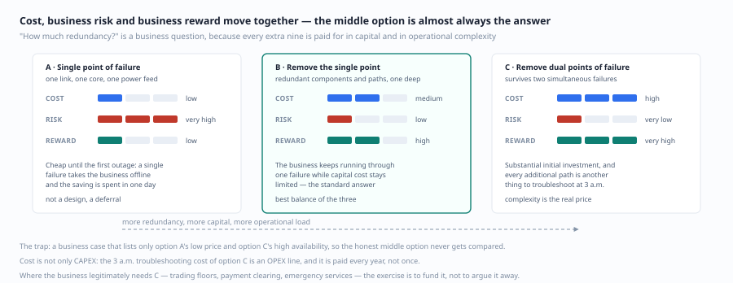
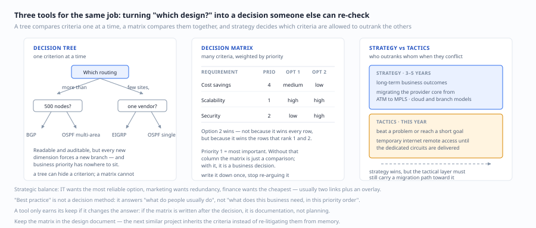
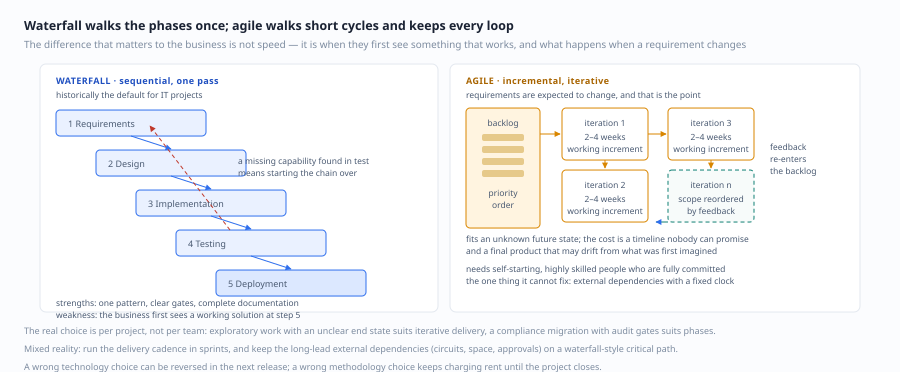
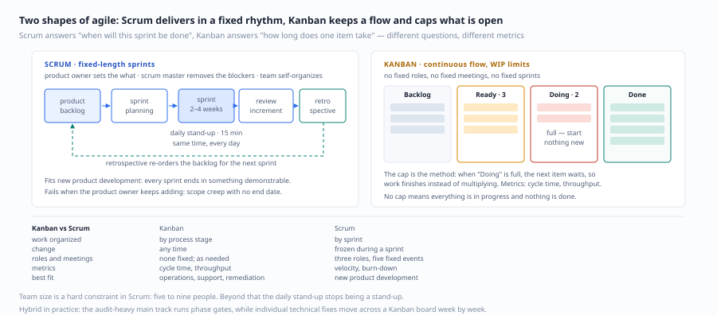
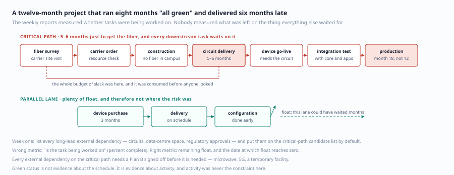
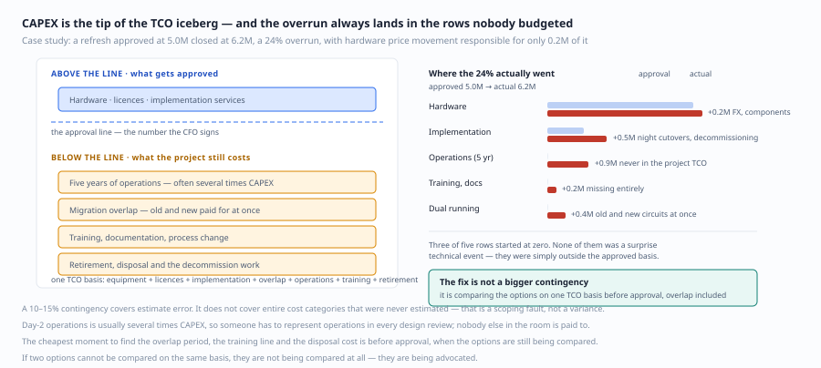
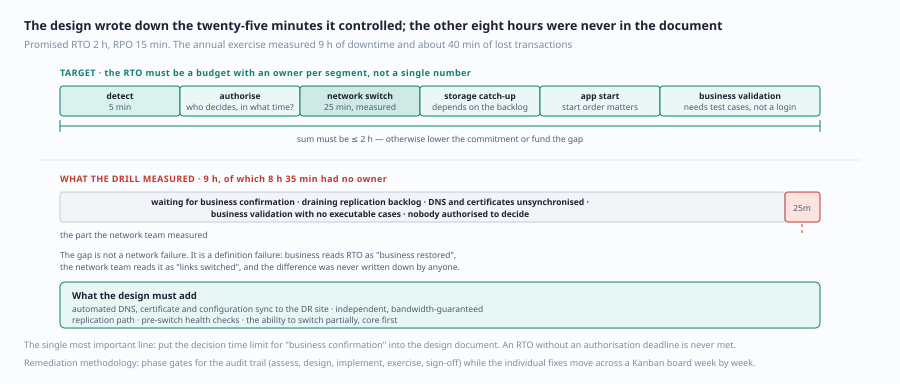

Chapter 2: Designing for Business Success · 第 2 章：为商业成功而设计
CCDE 400-007 Official Cert Guide · English study notes | Original edition, Chapter 2 (pp. 141–180)
Terminology follows the English edition. Every English passage is followed by its Chinese counterpart in the grey block below it, so the two can be checked sentence by sentence.
《CCDE 400-007 Official Cert Guide》中文翻译 | 原书第 141-180 页
Topics Covered · 本章涵盖主题
- Business success: the business concepts and vocabulary a network designer is expected to know
- Project management methodologies: the most widely used project management approaches today
- 商业成功：网络设计师应了解的业务要素和术语
- 项目管理方法论：当今最常见的项目管理方法
Chapter Overview: the Language of Business Is a Designer's Second Native Tongue · 本章导读：业务语言是设计师的第二母语
Chapter 1 argued that you must ask "why" first. This chapter answers a sharper question: in what language is that "why" spoken? The answer is the language of business — priorities, drivers, outcomes, budgets, risk, compliance, time to market. A designer who cannot follow this language can only receive requirements passively; a designer who can follow it gets to help define them.
第 1 章讲"先问为什么"。这一章回答一个更尖锐的问题："为什么"是用什么语言说出来的？ 答案是业务语言——优先级、驱动力、成果、预算、风险、合规、上市时间。听不懂这套语言的设计师，只能被动接收需求；听得懂的设计师，能参与定义需求。
Eight lessons that are easy to miss:
八个容易踩空的认知：
1. Business priorities change; what matters is how fast the architecture can follow. Today's top priority may be cost reduction and next year's may be acquisition-driven expansion. You are not expected to predict the future, but you must make sure the architecture does not have to be torn down when direction changes — that is the business value of modularity and decoupling.
1. 业务优先级会变，架构的"跟随速度"才是关键。 今天的头号优先级是"降本"，明年可能是"并购扩张"。设计时不必预测未来，但要让架构在方向变化时不必推倒重来——这正是模块化与解耦的商业价值。
2. Business drivers often do not look like "requirements". They may look like "we must pass the PCI DSS audit", "we must satisfy data residency requirements after the merger", or "the production line cutover must be done before September". Such drivers usually leave no room for negotiation, and they carry the highest cost of change, so they must be identified first.
2. 业务驱动力常常长得不像"需求"。 它可能是"必须通过 PCI DSS 审计""必须满足集团合并后的数据驻留要求""必须在 9 月前完成产线切换"。这类驱动力往往没有商量余地，而且变更成本最高，应当优先识别。
3. A business outcome must be measurable, or you cannot prove the value of the design. "Improve user experience" is not an outcome; "raise order submission success from 97% to 99.5%" is. Every technical choice in a design document should attach to a measurable business metric.
3. 业务成果必须能被度量，否则无法证明设计价值。 "提升用户体验"不是成果；"订单提交成功率从 97% 提升到 99.5%"才是。设计文档里每一个技术方案，都应能挂到一个可测的业务指标上。
4. The line between IT as a cost center and IT as a business enabler is whether value can be stated clearly. For the same SD-WAN proposal, "more flexible links" is a cost item, while "new store onboarding drops from 45 days to 7 days" makes IT a business enabler. The technology is identical; the narrative is not.
4. IT 从"成本中心"变成"业务推动者"，分水岭是能否说清价值。 同一套 SD-WAN 方案，说"链路更灵活"是成本项，说"新开门店的上线周期从 45 天缩短到 7 天"就是业务推动者。技术没变，叙事变了。
5. Elasticity and scalability are not synonyms. Scalability means capacity can grow; elasticity means capacity can be added and reclaimed quickly. Cloud-native applications need elasticity; a campus network usually needs scalability. Use the wrong word and you buy the wrong architecture.
5. 弹性 (Elasticity) 和可扩展 (Scalability) 不是同义词。 可扩展是"容量能长大"，弹性是"容量能快速伸缩并回收"。云原生应用要的是弹性，园区网络通常要的是可扩展。用错词，会买错架构。
6. A business continuity plan is not a list of disaster recovery hardware. It has to answer: which business functions, how long an outage is tolerable (RTO), how much data loss is tolerable (RPO), and at what cost. Business must answer those questions; the network team cannot decide them alone.
6. 业务连续性计划不是一份灾备设备清单。 它要回答的是：哪些业务功能、能容忍中断多久（RTO）、能容忍丢多少数据（RPO）、用什么代价换取。这些问题必须由业务回答，不能由网络团队自己拍。
7. A wrong technology choice can be reversed; a wrong methodology choice compounds. A project whose scope keeps expanding will inevitably explode at acceptance time if it is managed with waterfall; a migration with heavy compliance and audit obligations may lose its evidence trail under pure agile. Methodology is a function of project type, not of team preference.
7. 技术选错可以改，方法论选错会一路错到底。 一个范围持续膨胀的项目，用瀑布管理必然在验收阶段爆炸；一个强合规、强审计的迁移项目，用纯敏捷又可能缺少留痕。方法论是"项目类型的函数"，不是团队偏好。
8. Overruns are not about technology, they are about scope management. The case studies in this chapter show that a budget drifting from 5.0M to 6.2M is rarely caused by hardware price increases; it happens because three requirements were added "while we are at it" and nobody ever re-signed the scope.
8. 超支与技术无关，与范围管理有关。 第 2 章的案例会告诉你：预算从 500 万变成 620 万，通常不是因为设备涨价，而是因为"顺便"加了三个需求，且没有人重新签过一次字。
One-sentence summary: the value of a designer is not only getting the network right, but making the business see why the investment is worth it.
一句话概括这一章：设计师的价值不只在于"把网络做对"，更在于"让业务看懂这笔投资为什么值得"。
Foundation Topics · 基础内容
Business Success · 业务成功
The best starting point for understanding business requirements and direction is to look at the company as a whole and understand its business priorities, business drivers and business outcomes. That perspective is what allows a network designer to steer the design toward business success.
理解业务需求和方向的最佳起点是查看公司或业务的全局，理解其关联的业务优先级、业务驱动力和业务成果。这使网络设计师能够引导设计以确保业务成功。
Business Priorities · 业务优先级
Every enterprise has a set of business priorities, usually derived from the strategies it adopts to reach its goals. Business priorities can influence the planning and design of the IT network infrastructure. A network designer must understand those priorities and align design priorities with them.
每个企业都有一套业务优先级，通常基于为实现目标而采用的策略。业务优先级可以影响 IT 网络基础设施的规划和设计。网络设计师必须了解这些优先级，使其与设计优先级保持一致。
For example, if the company's top priority is delivering more collaborative and interactive business communication solutions, and the second is providing end-user mobile access, then the collaboration solution must be satisfied first before expanding into mobility.
例如，如果公司最高优先级是提供更协作和互动的业务通信解决方案，其次是提供最终用户的移动访问，那么必须先满足协作通信解决方案，然后再扩展到移动解决方案。
A common example of a business priority is security. Related terms include zero trust architecture, network security modernization and risk management frameworks. Whatever the label, the intent is the same — protect the network and preserve data integrity. If enterprise data is compromised, the business goes out of business.
业务优先级示例：安全。其他术语包括零信任架构、网络安全现代化和风险管理框架。无论叫什么，意图相同——保护网络和维护数据完整性。如果企业数据被破坏，企业就会停业。
Business Drivers · 业务驱动力
Business drivers are the directions an organization must follow. A business driver is usually the reason an enterprise has to achieve a particular outcome: it is the "why" behind doing something.
业务驱动力是组织必须遵循的方向。业务驱动力通常是企业必须实现特定成果的原因。它是企业做某件事的"为什么"。
For example, the constraint of following a specific compliance standard such as HIPAA or PCI DSS is a business driver. If the business does not comply it can be fined or shut down. The driver can be stated as "required to comply with the HIPAA standard".
例如，遵循特定合规标准（如 HIPAA 或 PCI DSS）的约束就是业务驱动力。如果企业不遵守，可能会被罚款甚至关闭。业务驱动力可以表述为"被要求遵循 HIPAA 合规标准"。
Business Outcomes · 业务成果
Business outcomes are equivalent to final results — saving money, diversifying the business, growing revenue, or satisfying a specific need. Business outcomes map concretely to business drivers.
业务成果等同于最终结果，如节省资金、多元化业务、增加收入或满足特定需求。业务成果具体映射到业务驱动力。
Using security as the business priority: business driver = "required to comply with HIPAA", business outcome = "maintain HIPAA compliance correctly so the business keeps operating".
以安全为业务优先级的示例：业务驱动力 = "被要求遵循 HIPAA 合规标准"，业务成果 = "正确维护 HIPAA 合规以保持运营"。
Every driver has at least one outcome, but multiple outcomes can map to the same driver.
每个驱动力至少有一个成果，但多个成果可以映射到同一驱动力。
Business Capabilities · 业务能力
A business capability is not a solution. A business capability is what you get from a solution. Most solutions provide several capabilities.
业务能力不是解决方案。业务能力是你从解决方案中获得的东西。大多数解决方案提供多种能力。
For example, session-based security may be a capability the business needs. A vendor-neutral network access control (NAC) solution provides that capability. Cisco ISE is an example of a vendor-specific solution that provides session-based security along with many other capabilities.
例如，基于会话的安全是企业可能需要的能力。厂商无关的网络访问控制 (NAC) 解决方案提供这种能力。Cisco ISE 是厂商特定解决方案的示例，它提供基于会话的安全能力以及多种其他能力。
Business capabilities map directly to business outcomes. Several capabilities often map to the same outcome, and several outcomes often map back to the same capability.
业务能力直接映射到业务成果。多个能力通常映射到同一成果，多个成果也通常映射到同一能力。
Mapping priorities, drivers, outcomes and capabilities:
业务优先级、驱动力、成果和能力关系映射：
| Priority | Driver | Outcome | Capability |
|---|---|---|---|
| Priority #1 | Driver #1 | Outcome #1 | Capability #1, Capability #2 |
| Priority #1 | Driver #2 | Outcome #2 | Capability #1 |
| Priority #2 | Driver #3 | Outcome #2 | Capability #1 |
| Priority #3 | Driver #3 | Outcome #3 | Capability #3, Capability #4 |
| Priority #4 | Driver #4 | Outcome #4 | Capability #4 |
| 优先级 | 驱动力 | 成果 | 能力 |
|---|---|---|---|
| 优先级 #1 | 驱动力 #1 | 成果 #1 | 能力 #1, 能力 #2 |
| 优先级 #1 | 驱动力 #2 | 成果 #2 | 能力 #1 |
| 优先级 #2 | 驱动力 #3 | 成果 #2 | 能力 #1 |
| 优先级 #3 | 驱动力 #3 | 成果 #3 | 能力 #3, 能力 #4 |
| 优先级 #4 | 驱动力 #4 | 成果 #4 | 能力 #4 |

图 2-1 优先级、驱动力、成果、能力：四层链条，每条线都要能追溯
Business Continuity · 业务连续性
Business continuity (BC) is the ability to keep business activities running after a disruption. Disruptions can come from system failure or natural disaster, so enterprises must build and improve their level of resilience in order to withstand and recover from unplanned outages.
业务连续性 (BC) 是指在中断后继续业务活动的能力。中断可能由系统故障或自然灾害引起。因此，企业需要建立和提高弹性水平，以应对和恢复意外中断。
The BC driver differs between parts of the network because the business impact differs. For a retail company, an outage at a remote store has far less impact than an outage at the main data center. If the main data center goes offline, every store is affected (higher risk) with larger financial loss (tangible) and reputation damage (intangible).
网络不同部分的 BC 驱动力可能因对业务影响程度不同而异。例如，零售企业的一个远程门店中断比主数据中心中断影响要小。如果主数据中心离线，会影响所有门店（更高风险），造成更大的金钱损失（有形）和声誉损失（无形）。
Recovery Point Objective (RPO) · 恢复点目标
RPO is the amount of data that can be lost during peak business demand before the business is harmed. RPO is expressed as a time value measured against the last backup.
RPO 是在峰值业务需求期间，在对业务造成伤害之前可以丢失的数据量。RPO 被赋予一个特定的时间值，相对于上次备份进行衡量。
- In most cases RPO is under one hour, with an average of 10 minutes
- An RPO of 10 minutes means the business can tolerate losing the 10 minutes of data between the start of a critical outage and the most recent backup
- 大多数情况下 RPO 不到 1 小时，平均值为 10 分钟
- RPO 为 10 分钟意味着企业可以承受从关键中断开始到最近备份之间 10 分钟的数据丢失
Recovery Time Objective (RTO) · 恢复时间目标
RTO is the length of time an application, system, network or resource can be offline without causing significant business damage, together with the time needed to restore service.
RTO 是应用、系统、网络或资源可以离线而不造成重大业务损害的时间长度，以及恢复服务所需的时间。
For example, a cloud-based infrastructure company has an RPO of 15 minutes and an RTO of 20 minutes. A 10-minute outage stays inside both targets. A 2-hour outage, however, leaves 1 hour 40 minutes of downtime uncovered.
例如，一个基于云的基础设施公司的 RPO 为 15 分钟、RTO 为 20 分钟。如果发生 10 分钟的中断，两个指标都在范围内。但如果发生 2 小时的中断，则有 1 小时 40 分钟的中断时间未被覆盖。

图 2-2 RPO 往回看最近一次好数据，RTO 往前看业务恢复
Elasticity to Support Strategic Business Trends · 弹性以支持战略业务趋势
Elasticity is the degree of flexibility a design can offer in response to business change. Change can mean organic growth, business decline, merger or acquisition.
弹性是指设计在响应业务变化时可以提供的灵活程度。变化可以是有机增长、业务衰退、合并或收购。
Example: a higher-education campus architecture has four directly interconnected locations. Any opportunistic growth that requires a new location introduces significant complexity in cabling, control plane and manageability. Optimizing the design for modularity by adding a core module means adding or removing any module or location does not affect the others.
示例：一个高等教育园区架构有四个直接互连的位置。任何需要添加新位置的有机会增长都会在布线、控制平面和可管理性方面引入大量复杂性。通过添加核心模块来优化模块化设计，添加或删除任何模块/位置不会影响其他位置。

图 2-3 可扩展让容量变大，弹性让容量能收回，模块化决定代价
IT as a Business Innovation Enabler · IT 作为"业务创新"推动者
When a technology can act as a business enabler that helps the organization compete or improve customer satisfaction, adoption of that technology gains business support.
当某项技术可以作为业务推动者，帮助组织在市场竞争或提高客户满意度时，该技术的采用将得到业务支持。
For example, cloud-based data centers opened new revenue opportunities for managed service providers. Delivering cloud-based services requires reliable, flexible and high-performance data center infrastructure. The network, as the foundation of cloud services, becomes an enabler of revenue-generating solutions.
例如，基于云的数据中心为托管服务提供商开辟了新的收入机会。企业提供基于云的服务需要可靠、灵活和高性能的数据中心基础设施。网络作为云服务的基础，将成为企业创收解决方案的推动者。
IT as the "New" Utility · IT 作为"新"公用事业
Over the past decade, IT and networking have come to resemble utility providers such as electricity or water. Most enterprises simply assume the Internet works and that business applications are always available to end users. Wherever people go — hotel, airport, restaurant — there is some form of wireless connectivity. We take it for granted, the way we expect the light to come on when we flip a switch.
在过去十年中，IT 和网络越来越像公用事业提供商（如电力或水务）。大多数企业假设"互联网"就是能工作的，业务应用对最终用户始终可用。无论走到哪里——酒店、机场、餐厅——都有某种形式的无线连接。我们已经习以为常，就像期望开关一开灯就亮一样。
This assumption of network availability is exactly the "unstated requirement" concept introduced in Chapter 1. As a network designer you must decide how far to carry the expectation that the network is a utility and is always available.
这种对网络可用性的假设就是第 1 章中介绍的"未明确需求"概念。作为网络设计师，你需要确定将网络视为公用事业和始终可用的期望推到多远。
Business risk vs. reward vs. cost analysis:
业务风险 vs. 回报 vs. 成本分析：
| Design decision | Cost | Business risk | Business reward |
|---|---|---|---|
| Single point of failure design | Low; no extra redundancy cost | Very high; an outage is likely to take the business offline | Low; initial cost savings |
| Remove single point of failure | Medium; cost of redundant components | Low; the business keeps running through a single failure | High; the business continues to operate and earn |
| Remove dual points of failure | High; substantial initial investment | Very low; the business survives two simultaneous failures | Very high; but complexity is extreme |
| 设计决策 | 成本 | 业务风险 | 业务回报 |
|---|---|---|---|
| 单故障点设计 | 低；无额外冗余成本 | 很高；中断更可能直接导致业务离线 | 低；初期节省成本 |
| 消除单故障点 | 中等；增加冗余组件成本 | 低；单故障仍允许业务运作 | 高；业务可以继续运营并赚钱 |
| 消除双故障点 | 高；需要大量初始投资 | 很低；双故障仍允许业务运作 | 很高；更强大但复杂度极高 |
Removing the single point of failure is the best design option — it delivers a redundant solution that raises overall business availability while limiting capital cost.
消除单故障点是最佳设计选项——提供冗余解决方案，提高整体业务可用性，同时限制资金成本。

图 2-4 三种冗余选择，三张账单：中间那档通常就是答案
Money, Money, Money · 钱、钱、钱
About 90% of enterprises are for-profit companies. A business makes money by increasing revenue while reducing cost.
约 90% 的企业组织是营利性公司。企业通过增加收入同时降低成本来赚钱。
| Financial concept | Definition | Example |
|---|---|---|
| CAPEX | Capital expenditure — buying fixed assets | Consolidating four owned data centers into two, reducing fixed assets |
| OPEX | Operating expenditure — day-to-day running cost | Cutting the advertising and marketing budget |
| ROI | Return on investment — the perceived potential gain from an investment | The CCDE certification investment — knowledge, mindset and certified designer status deliver a very high return |
| TCO | Total cost of ownership — CAPEX + OPEX | Comparing the overall cost of solutions |
| 财务概念 | 定义 | 示例 |
|---|---|---|
| CAPEX | 资本支出——购买固定资产 | 将自有数据中心从 4 个合并为 2 个，减少固定资产 |
| OPEX | 运营支出——日常运营成本 | 减少广告和营销预算 |
| ROI | 投资回报率——投资带来的感知潜在收益 | CCDE 认证投资——知识、思维模式和认证设计师身份带来极高回报 |
| TCO | 总拥有成本——CAPEX + OPEX | 评估解决方案的总体成本 |
ROI is not always about money. The ROI of the CCDE certification, for example, includes knowledge, mindset and the identity of being a certified network designer.
ROI 不总是与金钱相关。例如 CCDE 认证的 ROI 包括知识、思维模式以及成为认证网络设计师的身份。
Planning · 规划
"If you fail to plan, you plan to fail."
"如果你没有计划，你就在计划失败。"
After gathering requirements, network designers sometimes jump straight into implementation and lean on best practice instead of planning "the possible ways from point A to point B".
网络设计师在获取需求后有时会专注于实施，依赖最佳实践，而不是规划"从 A 点到 B 点的可能方式"。
Decision Tree · 决策树
A decision tree is a tool a network designer can use to compare several design options or protocols against specific criteria. A designer may, for example, need to decide which routing protocol to run in a given topology or scenario.
决策树是网络设计师可以使用的工具，用于基于特定标准比较多种设计选项或协议。例如，设计师可能需要根据特定拓扑或场景决定使用哪种路由协议。
Decision Matrix · 决策矩阵
A decision matrix serves the same purpose as a decision tree but can carry more dimensions. A network designer can weigh business requirements and priorities inside the decision process.
决策矩阵与决策树目的相同，但可以添加更多维度。网络设计师可以在决策过程中同时考虑业务需求和优先级。
| Business requirement | Priority | Design option 1 | Design option 2 |
|---|---|---|---|
| Cost savings | 4 | Medium | Low |
| Scalability | 1 | High | High |
| Security | 2 | Low | High |
| 业务需求 | 优先级 | 设计选项 1 | 设计选项 2 |
|---|---|---|---|
| 节约成本 | 4 | 中等 | 低 |
| 可扩展 | 1 | 高 | 高 |
| 安全 | 2 | 低 | 高 |
In the example above, design option 2 is the better fit given the business requirements and their priorities.
在上例中，基于业务需求和优先级，设计选项 2 更适合。
Planning Approaches · 规划方法
| Approach | Characteristic | Example |
|---|---|---|
| Strategic planning | Aimed at long-term business outcomes and strategy | A service provider migrating its core from ATM to MPLS |
| Tactical planning | Aimed at overcoming a problem or reaching a short-term goal | An enterprise offering temporary Internet-based remote access until dedicated circuits are delivered |
| 方法 | 特点 | 示例 |
|---|---|---|
| 战略规划 | 面向长期业务成果和策略 | 服务提供商将核心从 ATM 迁移到 MPLS |
| 战术规划 | 面向克服问题或实现短期目标 | 企业临时通过 Internet 提供远程访问，直到提供专用连接 |

图 2-5 决策树、决策矩阵，以及战略与战术的分界线
Strategic Balance · 战略平衡
Different departments inside an organization have different strategies:
组织内不同部门有不同的策略：
| Department | Focus | Preference |
|---|---|---|
| IT | Service delivery | The most scalable and reliable option (MPLS VPN) |
| Marketing | Brand reputation | High-speed redundant links |
| Finance | Cost savings | The cheapest option (a single Internet link) |
| 部门 | 关注点 | 倾向 |
|---|---|---|
| IT 部门 | 服务交付 | 最可扩展和可靠的选项（MPLS VPN） |
| 市场部门 | 品牌声誉 | 高速冗余链路 |
| 财务部门 | 成本节约 | 最便宜的选项（单条 Internet 链路） |
Strategic balance example: a retail company runs two Internet links with an overlay VPN solution — delivering link redundancy cost-effectively, improving remote-site availability and meeting application bandwidth demand while protecting brand reputation.
战略平衡示例：零售企业使用两条 Internet 链路配合 VPN 覆盖解决方案——以成本效益的方式提供链路冗余、提高远程站点可用性、满足应用带宽需求，同时维护品牌声誉。
Project Management Methodologies · 项目管理方法论
Waterfall Methodology · 瀑布方法论
The waterfall project management framework follows a sequential, linear process and has historically been the most popular project management method for software engineering and IT projects.
瀑布项目管理框架遵循顺序、线性的过程，历史上是软件工程和 IT 项目最流行的项目管理方法。
Characteristics: - Each phase must complete before the next one starts - You cannot return to a previous phase without starting over - Gantt charts show start dates, end dates, assigned resources, dependencies and status
特点： - 每个阶段完成后才能进入下一阶段 - 不能回到前一阶段而不从头开始 - 使用甘特图显示开始日期、结束日期、分配资源、依赖关系和状态
Advantages of Waterfall · 瀑布方法的优势
| Advantage | Description |
|---|---|
| Easy to manage | Every project follows the same pattern and is easy to use and understand. Each phase has specific deliverables and a review process |
| Structured | Every phase has a start and an end, which makes progress easy to share with stakeholders |
| Complete documentation | Every phase requires documentation, leaving a complete record |
| 优势 | 说明 |
|---|---|
| 易于管理 | 每个项目遵循相同模式，易于使用和理解。每个阶段有特定可交付成果和审查流程 |
| 结构化 | 每个阶段有起点和终点，便于与利益相关者分享进度 |
| 文档完整 | 每个阶段都需要文档，留下完整记录 |
Disadvantages of Waterfall · 瀑布方法的劣势
| Disadvantage | Description |
|---|---|
| Resistant to change | Once a phase is complete you cannot go back. If testing reveals a missing business capability, the fix is very difficult and expensive |
| Late delivery of the solution | Several phases must complete before implementation can start. Business leaders see a working solution only late in the process |
| Hard requirements gathering | Correctly identifying what stakeholders really need early in the project is very difficult |
| 劣势 | 说明 |
|---|---|
| 抗拒变更 | 一旦阶段完成就不能回头。如果测试阶段发现缺少业务能力，修复非常困难和昂贵 |
| 解决方案交付晚 | 必须完成多个阶段才能开始实施。业务领导者在整个流程后期才能看到工作解决方案 |
| 需求收集困难 | 在项目早期就正确识别利益相关者真正需要什么非常困难 |
Agile Methodologies · 敏捷方法论
Agile methodologies are based on an incremental, iterative approach. Instead of the deep up-front planning of waterfall, agile accepts that requirements change over time and encourages continuous feedback from business leaders and stakeholders.
敏捷方法论基于增量、迭代的方法。不像瀑布模型那样在项目开始时进行深入规划，敏捷方法论接受随时间变化的需求，并鼓励来自不同业务领导者和利益相关者的持续反馈。
The Twelve Agile Principles · 敏捷 12 原则
- Customer satisfaction through early and continuous delivery of valuable software is the highest priority
- Welcome changing requirements, even late in development; agile processes harness change for the customer's competitive advantage
- Deliver working software frequently, from a couple of weeks to a couple of months, preferring the shorter timescale
- Business people and developers must work together daily throughout the project
- Build projects around motivated individuals; give them the environment and support they need and trust them to get the job done
- Face-to-face conversation is the most efficient and effective way to convey information to a development team
- Working software is the primary measure of progress
- Agile processes promote sustainable development
- Continuous attention to technical excellence and good design enhances agility
- Simplicity — the art of maximizing the work not done — is essential
- The best architectures, requirements and designs emerge from self-organizing teams
- The team reflects regularly on how to become more effective and tunes its behavior accordingly
- 最高优先级是通过尽早和持续交付有价值的软件来满足客户
- 欢迎需求变更，即使在开发后期。敏捷过程利用变化为客户创造竞争优势
- 频繁交付可工作的软件，从几周到几个月，优先选择较短的时间尺度
- 业务人员和开发人员必须每天在整个项目期间一起工作
- 围绕有动力的个人构建项目。给他们需要的环境和支持，信任他们完成工作
- 向开发团队传达信息的最有效和高效方法是面对面交流
- 可工作的软件是进度的首要衡量标准
- 敏捷过程促进可持续开发
- 持续关注技术卓越和良好设计增强敏捷性
- 简洁——最大化未完成工作量的艺术——是必不可少的
- 最好的架构、需求和设计来自自组织团队
- 团队定期反思如何更有效，然后相应调整行为
Advantages of Agile · 敏捷方法的优势
| Advantage | Description |
|---|---|
| Welcomes change | Shorter processes and work cycles make it easier to add changes throughout the project |
| Unknown future state | A good fit when the future state is not clearly defined |
| Faster delivery | Breaking the project into iterations focuses effort on higher-quality work |
| Feedback loops | Users and team members are encouraged to give feedback throughout the project |
| 优势 | 说明 |
|---|---|
| 欢迎变更 | 更短的流程和工作周期，更容易在整个项目中添加变更 |
| 未来状态未知 | 非常适合未来状态未明确定义的项目 |
| 更快交付 | 将项目分解为迭代过程，专注于更高质量的工作 |
| 反馈循环 | 鼓励用户和团队成员在整个项目中提供反馈 |
Disadvantages of Agile · 敏捷方法的劣势
| Disadvantage | Description |
|---|---|
| Lack of a timeline | Completion dates are hard to pin down, and tasks can be reprioritized |
| Needs a highly skilled team | Team members must be highly skilled self-starters |
| Time commitment | Every team member must be fully committed to the project |
| Final solution drift | With no clear plan at the start, the end product can differ greatly from what was expected |
| 劣势 | 说明 |
|---|---|
| 缺乏时间表 | 很难确定完成日期。任务可以重新排列优先级 |
| 需要高技能团队 | 团队成员必须包括高技能的自我驱动者 |
| 时间投入 | 所有团队成员需要完全投入项目 |
| 最终解决方案蔓延 | 项目开始时没有明确计划，最终产品可能与预期大不相同 |

图 2-6 瀑布只走一遍阶段，敏捷留住每一个循环
Scrum Methodology · Scrum 方法论
Scrum is a concrete implementation of agile that uses fixed-length iterations called sprints.
Scrum 是敏捷方法论的一种具体实现，使用固定时长的迭代称为冲刺 (Sprint)。
Scrum Roles · Scrum 角色
| Role | Responsibility |
|---|---|
| Product Owner | Defines the product vision and manages the product backlog |
| Scrum Master | Ensures Scrum is understood and enacted correctly, and removes impediments |
| Development team | Self-organizes to deliver the sprint goal |
| 角色 | 职责 |
|---|---|
| 产品负责人 (Product Owner) | 定义产品愿景、管理产品待办列表 |
| Scrum 大师 (Scrum Master) | 确保 Scrum 被正确理解和实施，消除障碍 |
| 开发团队 | 自组织完成冲刺目标 |
Scrum Events · Scrum 事件
| Event | Description |
|---|---|
| Sprint | A fixed-length iteration, typically two to four weeks |
| Sprint planning | Sets the sprint goal and the items to be done |
| Daily stand-up | A 15-minute synchronization each day |
| Sprint review | Demonstrates what the sprint produced |
| Sprint retrospective | Reflects on the process and improves it |
| 事件 | 说明 |
|---|---|
| 冲刺 (Sprint) | 固定时长（通常 2-4 周）的迭代 |
| 冲刺计划 | 确定冲刺目标和待办事项 |
| 每日站会 | 每日 15 分钟同步 |
| 冲刺评审 | 展示冲刺成果 |
| 冲刺回顾 | 反思和改进流程 |
Advantages of Scrum · Scrum 优势
| Advantage | Description |
|---|---|
| Fast delivery | Every sprint ends with a working product increment |
| High visibility | Daily stand-ups and sprint reviews keep everything transparent |
| Continuous improvement | Retrospectives keep refining the process |
| Adaptability | Priorities can be reordered between sprints |
| 优势 | 说明 |
|---|---|
| 快速交付 | 每个冲刺结束都有可工作的产品增量 |
| 高可视性 | 通过每日站会和冲刺评审保持透明 |
| 持续改进 | 通过冲刺回顾不断优化流程 |
| 适应性 | 可以在每个冲刺之间重新排列优先级 |
Disadvantages of Scrum · Scrum 劣势
| Disadvantage | Description |
|---|---|
| Blurred roles | Confusion can arise between the roles |
| Scope creep | If the product owner keeps adding requirements, the project may never finish |
| Team size limits | The optimal team size is five to nine people |
| Experience required | The team needs Scrum experience to work effectively |
| 劣势 | 说明 |
|---|---|
| 角色模糊 | 角色之间可能产生混淆 |
| 范围蔓延 | 如果产品负责人不断添加需求，项目可能永远无法完成 |
| 团队规模限制 | 最佳团队规模为 5-9 人 |
| 需要经验 | 团队需要 Scrum 经验才能有效运作 |
Kanban Methodology · 看板方法论
Kanban is a visual project management method focused on continuous delivery and workflow optimization.
看板是一种可视化的项目管理方法，专注于持续交付和工作流程优化。
Core Principles · 核心原则
- Visualize the workflow: use board columns to show the stages of work
- Limit work in progress (WIP limit): cap the amount of work in each stage
- Manage flow: monitor and optimize the workflow
- Make policies explicit: state the process rules openly
- Implement feedback loops: review and improve on a regular cadence
- Improve collaboratively: the team improves through shared experiments
- 可视化工作流程：使用看板列表示工作阶段
- 限制在制品 (WIP Limit)：限制每个阶段的工作量
- 管理流程：监控和优化工作流
- 明确流程政策：使流程规则显式化
- 实施反馈循环：定期回顾和改进
- 协作改进：团队共同改进实验
Kanban vs. Scrum · 看板 vs. Scrum 对比
| Comparison | Kanban | Scrum |
|---|---|---|
| Work organization | By process stage | By sprint |
| Change | Can be added at any time | Frozen during a sprint |
| Roles | No fixed roles | Three defined roles |
| Meetings | As needed | Fixed events |
| Metrics | Cycle time, throughput | Velocity, burndown chart |
| Best fit | Operations, support | New product development |
| 对比项 | 看板 | Scrum |
|---|---|---|
| 工作组织 | 按流程阶段 | 按冲刺 |
| 变更 | 可随时添加 | 冲刺期间不变 |
| 角色 | 无固定角色 | 三个明确角色 |
| 会议 | 按需 | 固定事件 |
| 度量 | 周期时间、吞吐量 | 速度、燃尽图 |
| 适合场景 | 运维、支持 | 新产品开发 |

图 2-7 Scrum 按固定节奏交付，看板限制在制品并度量流动
Case Studies · 实战案例
Case 1: Status "All Green", Delivered Six Months Late · 案例一：进度"一切正常"，最后延期 6 个月
Background: a manufacturing company's new factory network project, twelve-month schedule. The first eight months of weekly reports were all green.
背景：某制造企业新工厂网络项目，12 个月工期。第 1–8 个月周报都是绿灯。
Cause of the delay (which only surfaced in month nine): the carrier had insufficient fiber resources in the campus where the factory sits; a dedicated circuit needed five months to provision, and it was the prerequisite for every go-live.
延期原因（第 9 个月突然暴露）：工厂所在园区运营商光缆资源不足，专线开通需要 5 个月，而这是所有上线的前置条件。
Critical path analysis (which should have been done in month one):
关键路径分析（本该在第 1 个月就做）：
Fiber survey → carrier order → construction → circuit delivery (5-6 months) → device go-live → integration test → production
↑ every downstream task waits on this
Device purchase (3 months) → delivery → configuration ← this one actually has plenty of float
光缆勘察 → 运营商受理 → 施工 → 专线开通(5-6个月) → 设备上线 → 联调 → 投产
↑ 全部下游任务都等它
设备采购(3个月) → 到货 → 配置 ← 这条其实有很多浮动时间

图 2-8 关键路径由"最不能等"的任务决定，不是由工作量最大的任务决定
Lesson checklist:
教训清单：
| Problem | Correct practice |
|---|---|
| Treating external dependencies as "we'll deal with it later" | In week one, list long-lead external dependencies (circuits, data center space, approvals) as critical-path candidates |
| Weekly reports only tracking "is the task being worked on" | Track remaining float, not percent complete |
| No fallback plan | Every external dependency on the critical path needs a Plan B (microwave, 5G, temporary facility) |
| 问题 | 正确做法 |
|---|---|
| 把外部依赖当成"到时候再说" | 开工第一周就把长周期外部依赖（专线、机房、审批）列为关键路径候选 |
| 周报只看"任务有没有在做" | 看剩余浮动时间，而不是完成百分比 |
| 没有备选方案 | 关键路径上的外部依赖，必须有 Plan B（微波/5G/临时机房） |
💡 Lesson: the critical path is not set by the largest task, it is set by the task that can least afford to wait. In project management, identifying dependencies matters more than sequencing tasks.
💡 教训：关键路径不由工作量最大的任务决定，而由"最不能等"的任务决定。 项目管理里，识别依赖比排任务更重要。
Case 2: A 5.0M Budget That Spent 6.2M · 案例二：预算 500 万，实际花了 620 万
Background: an enterprise network refresh was approved at 5.0M. A year later finance found total spend of 6.2M — a 24% overrun.
背景：某企业网络改造立项 500 万。一年后财务发现总支出 620 万，超支 24%。
What made up the overrun:
超支构成：
| Item | At approval | Actual | Reason |
|---|---|---|---|
| Hardware | 3.2M | 3.4M | Exchange rates and component price increases |
| Implementation services | 0.8M | 1.3M | Underestimated decommissioning and night cutover work |
| Operations (5 years) | Booked to the "operations budget" | 0.9M | Never included in project TCO |
| Training and documentation | 0 | 0.2M | Missing entirely |
| Dual running during migration | 0 | 0.4M | Old and new circuits paid for at the same time |
| 项目 | 立项时 | 实际 | 原因 |
|---|---|---|---|
| 硬件 | 320 万 | 340 万 | 汇率与器件涨价 |
| 实施服务 | 80 万 | 130 万 | 低估旧设备退网与夜间割接工作量 |
| 运维（5 年） | 计入"运维预算" | 90 万 | 没有计入项目 TCO |
| 培训与文档 | 0 | 20 万 | 完全漏项 |
| 迁移期间双线并行 | 0 | 40 万 | 过渡期新旧链路同时付费 |
The correct TCO basis: equipment + licenses + implementation + migration overlap period + five years of operations + training + retirement and disposal.
正确的 TCO 口径：设备 + 许可 + 实施 + 迁移过渡期 + 5 年运维 + 培训 + 退役处置。

图 2-9 CAPEX 只是 TCO 的冰山一角，超支总落在没人预算过的那几格
💡 Lesson: CAPEX is only the tip of the iceberg. Compare options on a TCO basis at approval time; overruns usually land in "the cell nobody owns".
💡 教训：CAPEX 只是冰山一角。 立项时用 TCO 口径比较方案，超支往往发生在"没人负责的那一格"。
Design Pitfalls · 设计缺陷
| Pitfall | Symptom | Consequence | Correct practice |
|---|---|---|---|
| Mistaking a technical go-live for a business outcome | The charter says "replace the core switches" and acceptance tests exactly that | The project "succeeds" while the business pain (slow onboarding, frequent outages) is unchanged | Write outcomes as measurable business metrics: new-service onboarding time, order outage duration, cost per unit of bandwidth |
| RPO/RTO that exist only in the design document | The design claims RTO = 4 hours and has never been exercised | A real failure recovers at the speed of improvisation — measured at 12 hours | Every target needs a validation method (exercise frequency, cutover scripts, named owner); an untested RTO is an assumption |
| Approving on CAPEX alone | The budget covers only equipment and licenses | Migration overlap, five-year operations and training all overrun (Case 2) | Use one TCO basis: equipment + licenses + implementation + overlap + operations + training + retirement |
| Applying the wrong methodology | Waterfall on an exploratory project, sprints on a project with long external dependencies | The first churns requirements; the second loses control of the critical path | Use agile for delivery cadence while tracking long-lead external dependencies (circuits, space, approvals) on a waterfall-style plan |
| Reading "elasticity" as "buy more boxes" | Capacity grows with load but never shrinks | Rigid cost base and permanently billed idle resources | Elasticity = standardization + automation + metering: templates and on-demand provisioning first, expansion second |
| Business not involved in acceptance | Design, implementation and acceptance all close inside IT | The business rejects the result at go-live and the value cannot be proven | Business sign-off is mandatory at key gates: outcome definition, acceptance criteria, RTO targets |
| 缺陷 | 表现 | 后果 | 正确做法 |
|---|---|---|---|
| 把技术上线当业务成果 | 立项写"完成核心交换机替换"，验收也验这个 | 项目"成功"了，但业务痛点（上线慢、故障多）没变 | 成果必须写成业务可测指标：新业务上线周期、订单中断时长、单位带宽成本 |
| RPO/RTO 只写在方案里 | 方案写 RTO = 4 小时，从未做过切换演练 | 真实故障时按"摸索时间"恢复，实测 12 小时 | 目标值要配验证方式（演练频次、切换脚本、责任人），没有演练的 RTO 是假设 |
| 只按 CAPEX 立项 | 预算只算设备与许可 | 迁移过渡期双线并行、5 年运维、培训全部超支（案例二） | 统一用 TCO 口径：设备 + 许可 + 实施 + 过渡期 + 运维 + 培训 + 退役 |
| 方法论用错场景 | 探索型项目套瀑布，外部依赖长的项目套敏冲刺 | 前者需求反复改、后者关键路径失控 | 交付节奏用敏捷，长周期外部依赖（专线、机房、审批）单独走瀑布式跟踪 |
| 把"弹性"理解成"加设备" | 业务量涨了就扩容，缩不回来 | 成本刚性、闲置资源长期计费 | 弹性 = 标准化 + 自动化 + 可计量，先有模板和按需开通能力，再谈扩容 |
| 业务方不参与验收 | 设计、实施、验收全在 IT 内部闭环 | 上线后业务不认，项目价值无法证明 | 关键节点（成果定义、验收标准、RTO 目标）必须由业务方签字确认 |
Lessons Learned · 实战经验总结
| Lesson | Explanation |
|---|---|
| Define "success" before designing | A project without measurable business outcomes cannot prove its value afterwards. SMART is not paperwork; it is the basis for refusing scope creep later |
| External dependencies set the critical path | The largest task is not necessarily the most urgent; the one that can least afford to wait is (5-month fiber beats 3-month hardware) |
| Separate strategy from tactics | Strategy looks three to five years out (cloud, branch models); tactics cover this year's budget and projects. When they conflict, strategy wins, but the tactical layer must still carry a migration path |
| Reserve buffer for uncertainty | Hold 10–15% budget contingency and place schedule buffer on the critical path rather than spreading it evenly |
| Codify trade-offs with decision trees or matrices | Write down "under which conditions we choose A" so the next similar project does not re-argue it |
| Route requirement changes through impact assessment | Change itself is not the problem; "change without re-assessing schedule and cost" is. Every change updates the critical path and the TCO in the same step |
| Bring operational cost into design review | Day 2 OPEX is often several times CAPEX, so someone must speak for operations in every design review |
| 经验 | 说明 |
|---|---|
| 先定义"成功"再设计 | 没有可测业务成果的项目，做完也无法证明价值。SMART 不是形式，是后期拒绝范围蔓延的依据 |
| 关键路径由外部依赖决定 | 工作量最大的任务不一定最要紧，"最不能等"的才是（光缆 5 个月 > 设备 3 个月） |
| 区分战略与战术 | 战略层看 3–5 年方向（云、分支模式），战术层看年度预算与项目。两者冲突时以战略为准，但要在战术层留迁移路径 |
| 给"不确定"预留缓冲 | 预算缓冲 10–15%、工期缓冲放在关键路径上，而不是平均分配 |
| 用决策树/矩阵固化取舍 | 把"什么情况下选 A"写下来，后续同类项目不用重新吵一遍 |
| 需求变更要走影响评估 | 变更本身不是问题，"变更不评估工期与成本"才是。每次变更同时更新关键路径与 TCO |
| 把运维成本前置到设计评审 | Day 2 的 OPEX 通常数倍于 CAPEX，方案评审时必须有人代表运维说话 |
Design Scenarios (2) · 设计情景演练（2 个）
Scenario 1: "The Group Wants 30% Cost Reduction in Three Years" · 情景一："集团要求三年降本 30%"
Situation: the group has issued a cost-reduction target and IT must absorb 30% of it. The CFO's definition is "cut total IT spend by 30% within three years". The network team currently spends 18M per year on MPLS, 4M on maintenance, 3M on outsourced operations, and runs a 15-person internal team. The CIO proposes two options. Option A replaces the WAN with SD-WAN over Internet (12M first-year CAPEX, circuit cost falling to 6M per year). Option B renegotiates the MPLS contract and trims sites (no CAPEX, circuit cost falling to 14M per year).
场景：集团下发降本指标，IT 分担 30%。CFO 的口径是"三年内 IT 总支出降 30%"。网络团队当前状态：MPLS 年费 1800 万、设备维保 400 万、外包运维 300 万、15 人内部团队。CIO 提出两套方案：A 是全网换 SD-WAN + Internet（首年 CAPEX 1200 万，线路费降至 600 万/年）；B 是 MP.NET 合同重谈 + 精简点位（无 CAPEX，线路费降至 1400 万/年）。
Questions to answer: 1. Which business outcome does the CFO's "30% reduction" correspond to, and how is it measured? 2. How should the three-year TCO of Option A be calculated so that it cannot be overturned? 3. Beyond cost, which other business priorities must be satisfied at the same time?
要回答的问题： 1. CFO 的"降本 30%"对应哪一个业务成果，怎么度量？ 2. 方案 A 的三年 TCO 怎么算才不会被推翻？ 3. 除了成本，还有哪些业务优先级必须同时被满足？
Reference approach: - Translate the target into an auditable basis first. "Cut total IT spend by 30%" must be broken into circuits, hardware, software, people and outsourcing, and it must be explicit which year is the baseline and whether depreciation is included. A cost target with an unclear basis always ends in people talking past each other. - The correct arithmetic for Option A: three-year spend = 12M CAPEX + 18M circuits + maintenance + people + new items (SD-WAN controller licenses, encryption gateways, operations tooling, two SD-WAN engineers). Many proposals fail because the new items stay off the spreadsheet. If the new items exceed the savings, A does not reduce cost over three years — it merely moves cost from OPEX to CAPEX. - Business priorities that must be satisfied at the same time: if the group is pushing cloud adoption and global expansion, then delivery speed and new-site onboarding time may matter more than three-year TCO — and only then should A's implicit benefit (agility) be counted in the case. - The right deliverable: a three-year TCO comparison (including hidden costs) + a list of business benefits and risks beyond cost + a phased recommendation (use B to stop the bleeding first, then A for structural cost reduction). Do not give the CFO a single-point conclusion; give a path that can be decided in stages. - Check the business drivers: do compliance, data residency or SLA commitments prevent some traffic from crossing the Internet? If so, A must be a hybrid design and the cost has to be recalculated.
参考思路： - 先把指标翻译成可核算的口径。 "IT 总支出降 30%"要拆成线路、硬件、软件、人力、外包五类，并明确分母是哪一年、是否含折旧。口径不清的降本目标，最后一定会变成"各说各话"。 - 方案 A 的正确算法：三年总支出 = CAPEX 1200 + 线路 1800 + 维保 + 人力 + 新增项（SD-WAN 控制器许可、加密网关、运维工具、2 名 SD-WAN 工程师）。很多方案失败在于把新增项漏在表外。若新增项超过节省额，A 在三年周期内并不降本，只是把成本从 OPEX 挪到 CAPEX。 - 同时必须满足的业务优先级：集团如果在推"上云 + 全球扩张"，那么方案的上线速度和新站点接入周期可能比三年 TCO 更重要——这时 A 的隐性收益（敏捷性）才应该被计入论证。 - 正确的产出：一张三年 TCO 对照表（含隐性成本）+ 一份"降本之外的业务收益/风险"清单 + 分阶段执行建议（先用 B 止血、再用 A 做结构性降本）。不要给 CFO 一个单点结论，要给一个可分期决策的路径。 - 业务驱动力核查：是否有合规、数据驻留、SLA 承诺限制某些流量不能走 Internet？如果有，A 就必须是混合方案，成本要重算。
Scenario 2: The "Fake RTO" Exposed by a DR Exercise · 情景二：灾备演练暴露的"假 RTO"
Situation: a bank's core system claims RTO = 2 hours and RPO = 15 minutes. In the annual exercise, the real switchover to the DR site took nine hours and about 40 minutes of transaction data was lost. The post-mortem showed that the network switchover itself took only 25 minutes; the rest of the time went to "waiting for business confirmation that we may switch", "draining the backlog in storage replication", and "DNS and certificates not synchronized on the DR side".
场景：某银行核心系统宣称 RTO = 2 小时、RPO = 15 分钟。年度演练时真实切换到灾备中心用了 9 小时，且丢失了约 40 分钟的交易数据。事后调查：网络切换本身只用了 25 分钟，其余时间花在"等业务确认可以切""存储复制积压排空""DNS/证书在灾备侧未同步"。
Questions to answer: 1. Did this exercise fail because of the network design? 2. What has to change in the design, and what has to change in the process? 3. Which project management methodology fits the remediation?
要回答的问题： 1. 这次演练失败，问题出在网络设计上吗？ 2. 设计和流程上分别要改什么？ 3. 用哪种项目管理方法论推进整改更合适？

图 2-10 RTO 必须是一张带责任人的时间预算表，而不是一个数字
Reference approach: - The failure is not in the network, it is in the boundary of the RTO definition. Business reads RTO as "time to restore the business"; the network team reads it as "time to switch the links". The eight hours in between are exactly what the design never wrote down: DNS, certificates, authentication, storage replication, business validation steps, and the person authorized to decide. - Split the RTO into a time budget: detection (5 min) → decision authorization (define who can decide, within how many minutes) → network switchover (25 min) → storage catch-up (depends on backlog) → application start → business validation (needs executable test cases, not "log in and look"). Every segment needs an owner and a measured value, and the total must be ≤ 2 hours, otherwise lower the commitment or fund more. - What the design must add: automated synchronization of DNS, certificates and configuration to the DR site, independence and bandwidth guarantees for the replication path, pre-switch health checks, and the ability to switch partially (core first, non-core later). - Methodology: this is a remediation with heavy compliance and audit evidence. The main track suits waterfall-style phase gates (assess → design → implement → exercise → audit sign-off), while the individual technical fixes are better tracked on a Kanban board in weekly iterations. A hybrid methodology fits reality better than either pure agile or pure waterfall. - The single most important item: write the decision time limit for the "business confirmation" step into the design document. An RTO without an authorization deadline will never be met.
参考思路： - 失败不在网络，在"RTO 的定义边界"。 业务理解的 RTO 是"业务恢复时间"，网络团队理解的是"链路切换时间"。两者相差的那 8 小时，正是设计里没被写下来的部分：DNS、证书、身份认证、存储复制、业务验证步骤、决策授权人。 - 把 RTO 拆成时间预算表：检测 (5 min) → 决策授权 (需明确"谁可以在几分钟内拍板") → 网络切换 (25 min) → 存储追赶 (视积压) → 应用启动 → 业务验证 (必须有可执行的用例，不是"登录看看")。每一段都要有负责人和实测值，总预算加总必须 ≤ 2 小时，否则就要下调承诺或加投入。 - 设计侧要补的：灾备侧 DNS/证书/配置的自动化同步、复制链路的独立性与带宽保障、切换前的健康检查、以及"部分切换"能力（核心先切、非核心后切）。 - 方法论：这是强合规、强审计、需要留痕的整改，主干适合瀑布式阶段推进（评估 → 设计 → 实施 → 演练 → 审计签字），但具体的技术修复项适合用看板跟踪、按周迭代。混合方法论比"纯敏捷"或"纯瀑布"都更贴合现实。 - 最关键的一条：把"业务确认"这一步的决策时长写进设计文档。没有授权时限的 RTO，永远达不到。
Key Terms · 本章关键术语
| Term | Meaning |
|---|---|
| Business Priorities | The ranked business goals that shape design priorities |
| Business Drivers | The direction an organization must follow; the "why" behind an outcome |
| Business Outcomes | The measurable final results a business needs |
| Business Capabilities | What a solution provides to the business; not the solution itself |
| Business Continuity (BC) | The ability to keep business activities running after a disruption |
| Recovery Point Objective (RPO) | How much data may be lost, expressed against the last backup |
| Recovery Time Objective (RTO) | How long a service may be offline without significant business damage |
| Elasticity | The flexibility to add and reclaim capacity as business changes |
| CAPEX | Capital expenditure on fixed assets |
| OPEX | Operating expenditure for day-to-day running |
| ROI | Return on investment, not necessarily financial |
| TCO | Total cost of ownership: CAPEX + OPEX over the full lifecycle |
| Decision Tree | A tool for comparing design options against criteria |
| Decision Matrix | A multi-dimensional version of the decision tree including business weightings |
| Strategic Planning | Planning aimed at long-term business outcomes |
| Tactical Planning | Planning aimed at short-term goals or problem resolution |
| Strategic Balance | Reconciling the competing strategies of different departments |
| Waterfall | Sequential, linear project management |
| Agile | Incremental, iterative project management that welcomes change |
| Scrum | An agile implementation using fixed-length sprints and defined roles |
| Kanban | A visual, flow-based method with WIP limits |
| Sprint | A fixed-length iteration in Scrum |
| Product Owner | The role that owns the product vision and backlog |
| Scrum Master | The role that guards the process and removes impediments |
| WIP Limit | A cap on work in progress per stage |
| 术语 | 中文含义 |
|---|---|
| Business Priorities | 业务优先级 |
| Business Drivers | 业务驱动力 |
| Business Outcomes | 业务成果 |
| Business Capabilities | 业务能力 |
| Business Continuity (BC) | 业务连续性 |
| Recovery Point Objective (RPO) | 恢复点目标 |
| Recovery Time Objective (RTO) | 恢复时间目标 |
| Elasticity | 弹性 |
| CAPEX | 资本支出 |
| OPEX | 运营支出 |
| ROI | 投资回报率 |
| TCO | 总拥有成本 |
| Decision Tree | 决策树 |
| Decision Matrix | 决策矩阵 |
| Strategic Planning | 战略规划 |
| Tactical Planning | 战术规划 |
| Strategic Balance | 战略平衡 |
| Waterfall | 瀑布方法论 |
| Agile | 敏捷方法论 |
| Scrum | Scrum 方法论 |
| Kanban | 看板方法论 |
| Sprint | 冲刺 |
| Product Owner | 产品负责人 |
| Scrum Master | Scrum 大师 |
| WIP Limit | 在制品限制 |
Chapter Summary · 本章小结
Chapter 2 answers a question no other chapter can replace: why is this design worth doing at all?
第 2 章回答的是一个其他章节都无法替代的问题：这个设计凭什么值得做？
Business drivers (market share, cost, compliance, M&A…)
↓ translated into
Business outcomes (SMART, measurable)
↓ supported by
Business capabilities (what the network must provide)
↓ realized as
Network requirements + constraints → design
↓ validated by
KPI / RPO / RTO / TCO
业务驱动力（市场份额、成本、合规、并购…）
↓ 翻译
业务成果（SMART，可测）
↓ 支撑
业务能力（需要网络具备什么）
↓ 落地为
网络需求 + 约束 → 设计
↓ 验证
KPI / RPO / RTO / TCO
Three judgments worth taking away:
三个必须带走的判断：
| Judgment | Meaning |
|---|---|
| Business continuity is quantifiable | RPO decides how much data may be lost and RTO decides how long the business may stand still. Those two numbers set the redundancy model and the investment size, and they decide whether you build active-active at all |
| Budgets must use TCO, not CAPEX | Migration overlap, five years of operations, training and retirement are where overruns concentrate |
| Methodology must match uncertainty | Stable requirements → waterfall; exploratory requirements → agile/Scrum; operations and support → Kanban. Waterfall on a variable-scope project is a disaster, and sprints alone on a project with long external dependencies is loss of control |
| 判断 | 含义 |
|---|---|
| 业务连续性是可量化的 | RPO 决定"允许多少数据丢失"，RTO 决定"允许多长时间不干活"。两个数字决定冗余方式与投资规模，也决定要不要建双活 |
| 预算要用 TCO 而不是 CAPEX | 迁移过渡期双线并行、5 年运维、培训与退役，这几项是超支高发区 |
| 方法论要匹配不确定性 | 需求稳定 → 瀑布；需求探索 → 敏捷/Scrum；运维与支持 → 看板。范围可变的项目用瀑布 = 灾难，外部依赖长的项目只跑冲刺 = 失控 |
One-line memory hook: technical solutions can be replaced, business outcomes cannot. When two options are technically equivalent, let business outcomes and TCO decide, not technical preference.
一句话记忆：技术方案可以替换，业务成果不能替换。 当两套方案技术上都能用时，让业务成果与 TCO 来决定，而不是让技术偏好来决定。
This chapter and Chapter 5 are two sides of the same coin: Chapter 2 provides targets and numbers, and Chapter 5 provides the method for carrying those targets into a governance process (business architecture → enterprise architecture → reference architecture).
本章与第 5 章是同一件事的两面：第 2 章给出目标与数字，第 5 章给出把目标纳入治理流程的方法（业务架构 → 企业架构 → 参考架构）。